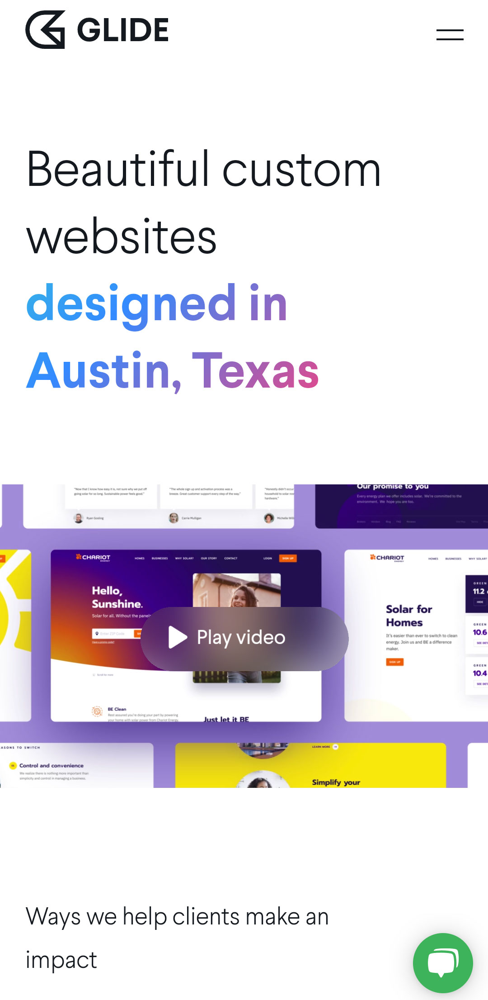
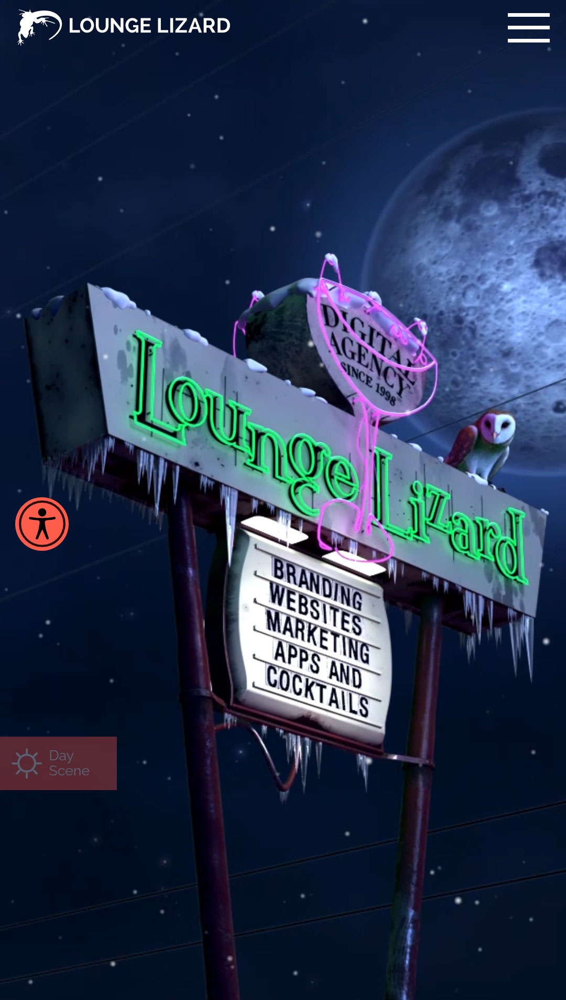
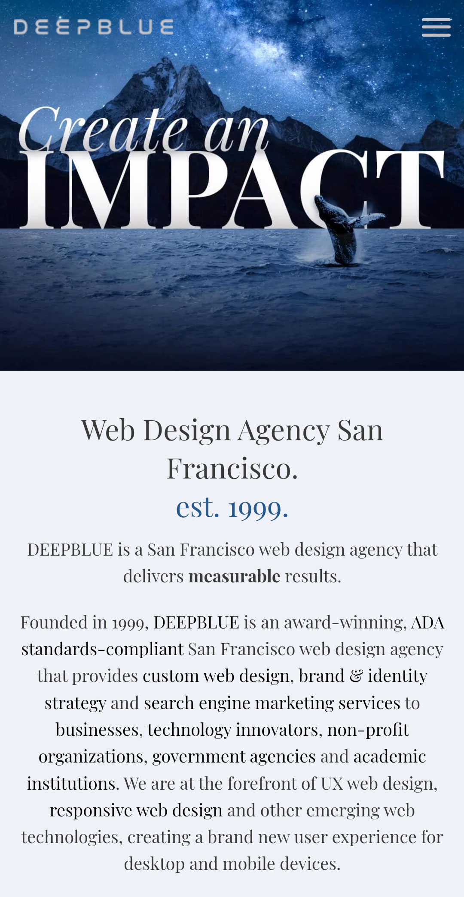

Whitespace
Glide
Glide's Website
Glide is a web design firm based in Austin, Texas. Their website is very simple and easy to view, mostly because of their skillful use of whitespace. There is plenty of space around their logo, the main heading, the video, and all other elements on the page, which draws attention to those elements. At a glace, it's very easy to understand what they do, because of how it's isolated in the center of the page.
Rule of Thirds
Lounge Lizard
Lounge Lizard's Website
Lounge Lizard is a New York based website design and development company. They feature a web-optimized animation on their homepage, which demonstrates, among other design principles, good use of the Rule of Thirds. The subject of the looped gif is an urban neon street sign with the company's name and services. The moving image itself has the subject in the center of the photo, catching the eye and piquing interest. There is also plenty of accessibility options featured on their website, as well.
Visual Hierarchy
Deep Blue
Deep Blue's Website
Deep Blue is a Web Design Agency based in San Francisco. Their homepage demonstrates visual hierarchy very well. The first thing that draws your attention (when your in mobile view) is the header image that says "Create an Impact". Then it's the DEEP BLUE logo at the top of the screen, then the heading and text underneath the image. This takes viewers on a journey, telling them what is most important about the website and what info they need to know first.